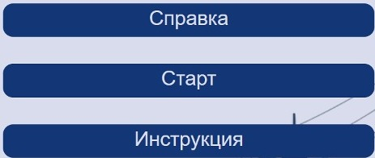
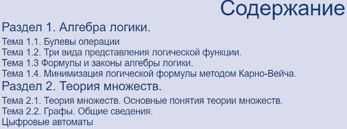
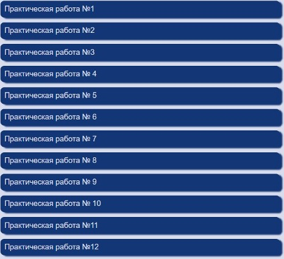

Перейдя по ссылке открывается методическое пособие по дискретной математике.
Вы видите три навигационной кнопки, по которым можно перейти в главное меню.
Вторая кнопка обозначает переход на главную страницу, где будет отображаться навигационное меню.
Третья кнопка обозначает переход на инструкцию пользованием сайтом, в данной инструкции вы научитесь правильно пользоваться данным сайтом и узнаете его структуру.
Прейдя на главное меню, вы видите две навигационные строки, по которым вы можете перейти в теоретическую часть и в начало работы.
Нажав на теоретическую часть, вы сможете познакомиться с системами по дискретной математике.
Далее, когда вы ознакомились со всей теоретической частью, вы можете пройти и решить практические работы.

Первая кнопка обозначает справку, в которой написана информация о разработчике о данном сайте.

Что бы перейти в практические работы вам нужно пеерйти в начало работы и зайти в практические работы.

После проделанной практической работы вы сможете увидеть свой результат проделанной работы.
Если вы прочитали и вам было понятно, то вы можете приступать к изучению дискретной математики.